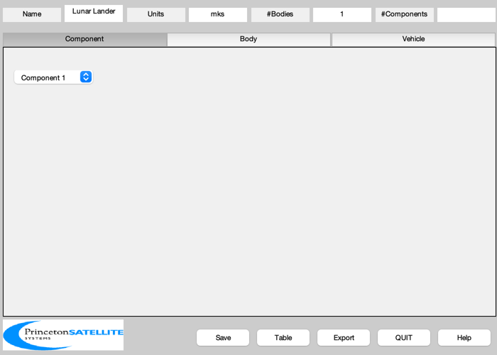
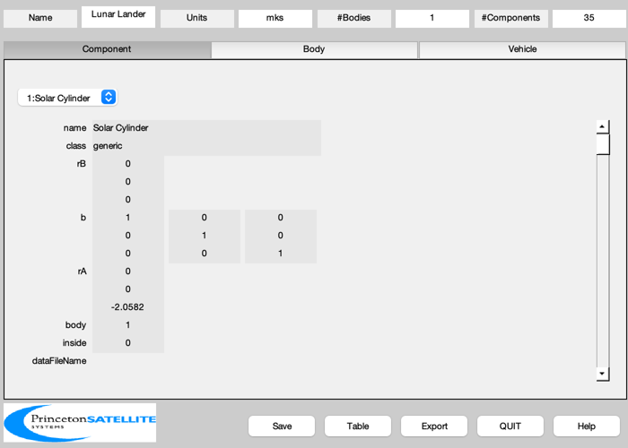
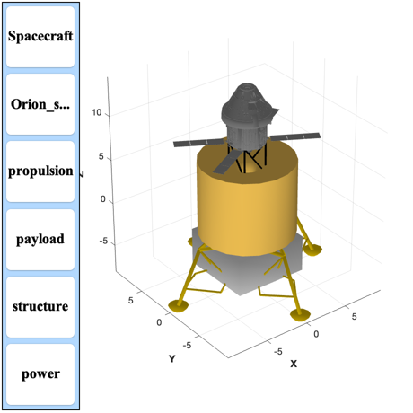

Design a fully reusable lunar lander
Can land and takeoff using one fuel load. Carries the Orion to and from the moon. Uses two BE-3U engines. Also demonstrates adding an obj file as a subassembly. See LoadOrionFile to see how to get the obj file into a CAD data structure format. Creates Artemis.obj and Artemis.mtl files.
See also: MassVolH2O2, DisplayLatexTable, BuildCADModel, CreateComponent, ExportOBJ
Contents
%-------------------------------------------------------------------------- % Copyright (c) 2019 Princeton Satellite Systems, Inc. % All rights reserved. %-------------------------------------------------------------------------- % Since 2019.1 %--------------------------------------------------------------------------
Flag to add Orion
addOrion = true; % https://space.skyrocket.de/doc_sdat/orion-mpcv.htm massOrion = 25848; % kg deltaV = 2*1.8; % km/s landing and takeoff each leg fTank = 0.05; % Fraction of mass massPay = 2000; % Delivered by a cargo vehicle to lunar orbit altitude = 15; % Orion must reach this altitude to dock accel = 13.4496; % m/s from LunarLandingOptimize3DLeastSquares.m massOP = massOrion + massPay; % Cargo % https://en.wikipedia.org/wiki/Apollo_Lunar_Module massDryD = 10334 - 8200; massAscent = 4700; % Lunar module % Estimate the mass of the non payload dry mass from Apollo masses mRLM = massDryD/massAscent; mStruct = mRLM*massOP; mDry = mStruct + massOP; % Best an H2/O2 engine can do fR = 0.6; % Mass ratio of O2 to H2 iSp = 467; uE = iSp*9.806; mR = exp(deltaV*1000/uE); mFuel = (mR-1)*mDry; mTotal = mDry + mFuel; thrustMax = mTotal*accel; [mH2, mO2, vH2, vO2] = MassVolH2O2( mFuel, fR ); nO2Tanks = 2; rO2 = (3*vO2/(4*pi*nO2Tanks))^(1/3); rMajH2 = 2.8; rMinH2 = sqrt(vH2/2/(2*rMajH2))/pi; % Solar array rS = rMajH2 + rMinH2 + 0.3; hS = 4.2*rMinH2; % Spectrolab's Space Solar Panels (without the substrate) are specified as: rhoS = 2.06; % 6 mil thickness eff = 0.3; power = 2*sin(pi/2)*hS*rS*eff*1367; clear s k = 1; s{k,1} = 'Maximum acceleration'; s{k,2} = sprintf('%12.2f m/s$^2$',mTotal); k = k + 1; s{k,1} = 'Maximum thrust'; s{k,2} = sprintf('%12.2f kN',accel*mTotal/1000); k = k + 1; s{k,1} = 'BE-3U thrust'; s{k,2} = sprintf('%12.2f kN',2*710); k = k + 1; s{k,1} = 'Mass total'; s{k,2} = sprintf('%12.2f kg',mTotal); k = k + 1; s{k,1} = 'Mass fuel'; s{k,2} = sprintf('%12.2f kg',mFuel); k = k + 1; s{k,1} = 'Mass Orion'; s{k,2} = sprintf('%12.2f kg',massOrion); k = k + 1; s{k,1} = 'Mass structure'; s{k,2} = sprintf('%12.2f kg',mStruct); k = k + 1; s{k,1} = 'Mass payload'; s{k,2} = sprintf('%12.2f kg',massPay); k = k + 1; s{k,1} = 'I$_{sp}$'; s{k,2} = sprintf('%12.2f s',iSp); k = k + 1; s{k,1} = '$\Delta v$'; s{k,2} = sprintf('%12.2f m/s',deltaV*1000); k = k + 1; s{k,1} = 'Altitude'; s{k,2} = sprintf('%12.2f km',altitude); k = k + 1; s{k,1} = 'Mass H$_2$'; s{k,2} = sprintf('%12.2f kg',mH2); k = k + 1; s{k,1} = 'Mass O$_2$'; s{k,2} = sprintf('%12.2f kg',mO2); k = k + 1; s{k,1} = 'Volume H$_2$'; s{k,2} = sprintf('%12.2f m$^3$',vH2); k = k + 1; s{k,1} = 'Volume O$_2$'; s{k,2} = sprintf('%12.2f m$^3$',vO2); k = k + 1; s{k,1} = 'Radius Major H$_2$ tank'; s{k,2} = sprintf('%12.2f m',rMajH2); k = k + 1; s{k,1} = 'Radius Minor H$_2$ tank'; s{k,2} = sprintf('%12.2f m',rMinH2); k = k + 1; s{k,1} = 'Radius O$_2$ tank'; s{k,2} = sprintf('%12.2f m',rO2); k = k + 1; s{k,1} = 'Number of O$_2$ tanks'; s{k,2} = sprintf('%d',nO2Tanks); k = k + 1; s{k,1} = 'Solar power'; s{k,2} = sprintf('%12.2f kW',power/1000); k = k + 1; % Diameter of Apollo LM 4.22 m DisplayLatexTable(s) CreateLatexTable(s,'LM')
Maximum acceleration 88875.60 m/s$^2$
Maximum thrust 1195.34 kN
BE-3U thrust 1420.00 kN
Mass total 88875.60 kg
Mass fuel 48383.42 kg
Mass Orion 25848.00 kg
Mass structure 12644.18 kg
Mass payload 2000.00 kg
I$_{sp}$ 467.00 s
$\Delta v$ 3600.00 m/s
Altitude 15.00 km
Mass H$_2$ 30239.64 kg
Mass O$_2$ 18143.78 kg
Volume H$_2$ 424.71 m$^3$
Volume O$_2$ 15.90 m$^3$
Radius Major H$_2$ tank 2.80 m
Radius Minor H$_2$ tank 1.96 m
Radius O$_2$ tank 1.24 m
Number of O$_2$ tanks 2
Solar power 34.17 kW
Create the 3D model
BuildCADModel( 'initialize' ); % Add spacecraft properties BuildCADModel( 'set name' , 'Lunar Lander' ); BuildCADModel( 'set units', 'mks' ); % Create bodies first m = CreateBody( 'make', 'name', 'Core' ); BuildCADModel('add body', m ); % This creates the connections between the bodies BuildCADModel( 'compute paths' );
Add Components
% Cylindrical solar panel [v, f] = Frustrum( rS, rS, hS, 20, 1, 1 ); m = CreateComponent( 'make', 'generic','vertex',v,'face',f,... 'faceColor', 'gold foil','inside',0,'name','Solar Cylinder',... 'rA', [0;0;-hS/4], 'mass', 2*pi*rS*hS*rhoS, 'body', 1 ); BuildCADModel( 'add component', m ); % Toroidal H2 tank [v, f] = Torus( rMajH2, rMinH2, 20 ); m = CreateComponent( 'make', 'generic','vertex',v,'face',f,... 'faceColor', 'gold foil','inside',0,'name','H2 Tank',... 'rA', [0;0;0], 'mass', (1+fTank)*mH2/2, 'body', 1 ); BuildCADModel( 'add component', m ); m = CreateComponent( 'make', 'generic','vertex',v,'face',f,... 'faceColor', 'gold foil','inside',0,'name','H2 Tank',... 'rA', [0;0;2*rMinH2], 'mass', (1+fTank)*mH2/2, 'body', 1 ); BuildCADModel( 'add component', m ); % O2 Tank m = CreateComponent( 'make', 'sphere','radius',rO2,'n',20,... 'faceColor', 'gold foil','inside',0,'name','O2 Tank',... 'rA', [0;0;0], 'mass', (1+fTank)*mO2/2, 'body', 1 ); BuildCADModel( 'add component', m ); m = CreateComponent( 'make', 'sphere','radius',rO2,'n',20,... 'faceColor', 'gold foil','inside',0,'name','O2 Tank',... 'rA', [0;0;2*rO2], 'mass', (1+fTank)*mO2/2, 'body', 1 ); BuildCADModel( 'add component', m ); % Support truss w = 2.1*rO2; [v, f] = Truss( [0;0;-2.2], [0;0;4.2*rMinH2], w, 3, 0.05*w ); m = CreateComponent( 'make', 'generic','vertex',v,'face',f,... 'faceColor', 'black','inside',0,'name','Support Truss',... 'rA', [0;0;0], 'mass', 100, 'body', 1 ); BuildCADModel( 'add component', m ); % Payload storage m = CreateComponent( 'make', 'box','x',8,'y',8,'z',4,... 'faceColor', 'aluminum','inside',0,'name','Payload',... 'rA', [0;0;-4.4], 'mass', 1000, 'body', 1 ); BuildCADModel( 'add component', m ); % Legs rL = 35; [v, f] = LandingLegsCAD('scale',0.1,'xy spacing',rL); m = CreateComponent( 'make', 'generic', 'v',v,'f',f,... 'faceColor', [1 0.84 0] ,'rA', [0;0;-6],... 'name', 'Landing Legs','inside',0); BuildCADModel( 'add component', m ); % BE-3U Engines dExit = 2; l = 2.0; uPlume = [0;0;-1]; rC = 0.1; lC = 0.3; lOC = 0.02; n = 12; [v,f] = ThrusterCAD( uPlume, dExit, l, n, rC, lC, lOC ); m = CreateComponent( 'make', 'generic', 'v',v,'f',f,... 'faceColor', 'steel' ,'rA', [-1.5;0;-6],... 'name', 'Engine 1','inside',0); BuildCADModel( 'add component', m ); m = CreateComponent( 'make', 'generic', 'v',v,'f',f,... 'faceColor', 'steel' ,'rA', [1.5;0;-6],... 'name', 'Engine 2','inside',0); BuildCADModel( 'add component', m ); % Orion. This must be a mat file containing a component data structure. % Use LoadCAD to create the datastructure if( addOrion ) BuildCADModel( 'add subassembly', 'OrionNew', 1, [0;0;4.5*rMinH2-1.678], eye(3) ); end BuildCADModel( 'add subsystem', 'propulsion', {'engine','tank'} ); BuildCADModel( 'add subsystem', 'payload', {'payload'} ); BuildCADModel( 'add subsystem', 'structure', {'truss', 'legs'} ); BuildCADModel( 'add subsystem', 'power', {'solar'} ); BuildCADModel( 'show vehicle' ); g = BuildCADModel( 'get model'); ExportOBJ( g, FileFullpath('Artemis') ); %-------------------------------------- % $Id: 4644cd606fc4b220b2f6f2d4b1b5e3fafa2c5265 $ 